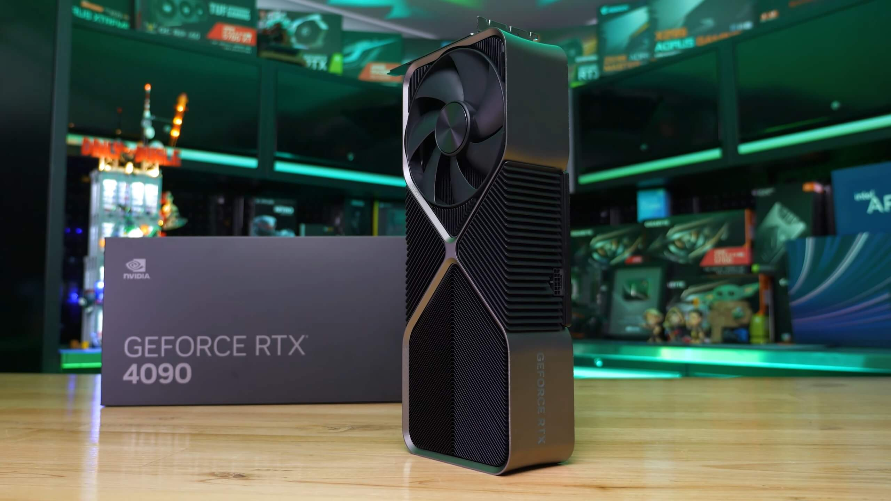
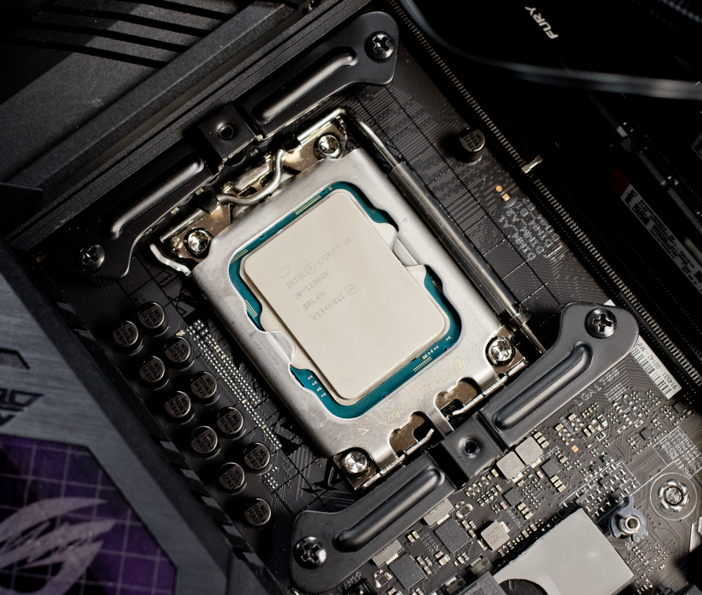
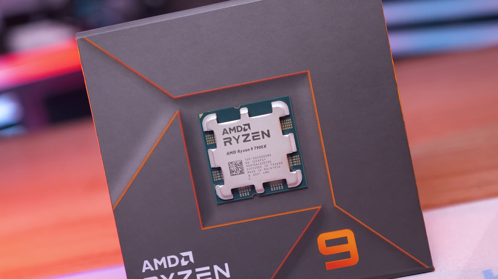
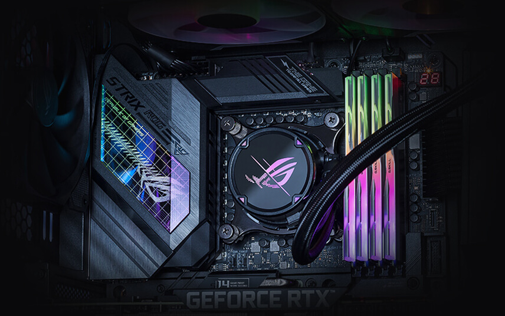

A nova gtx 4090
Mais rapida e mais poderosa de todas é uma conquista fenomenal no desempenho grafico. O embargo acaba hoje para a GeForce RTX 4090 da Nvidia e é uma conquista fenomenal no desempenho gráfico - como poderias esperar de uma GPU de $1600 / 1,900€. Em primeiro lugar, acho importante enfatizar que o nível de potência deste produto mostra um salto no desempenho que os componentes ao redor de um PC gaming podem ter dificuldades em aceder totalmente. As métricas de 1080p e 1440p com este produto são essencialmente insignificantes - mesmo com o meu Core i9 12900K com overclock para 5,2 GHz em todos os núcleos de desempenho Isso acontece mesmo em alguns benchmarks 4K sem ray tracing na equação. E mesmo que uses RT, optar pelo modo de desempenho DLSS (com uma imagem de base interna de 1080p) pode novamente fazer com que atinjas os limites do teu processador.
Quando falamos em jogos, há uma variedade interessante de resultados aqui com Dying Light 2 e Cyberpunk 2077 em configurações ultra RT a oferecerem grandes ganhos geracionais. O jogo da Techland consegue um bom aumento de desempenho de 74% para a RTX 4090 em relação ao campeão da última geração, RTX 3090 Ti. Este é um aumento de 94% em relação à RTX 3090. Os números também demonstram o desafio que a AMD enfrenta em termos de desempenho de ray tracing - há uma montanha para escalar até lá.
Queres saber mais? Ve este vídeo que explica mais sobre a nova RTX 4090.
Core i9-12900K
A 12ª geração da Intel, anteriormente conhecidos como “Alder Lake”, são uma grande diferença arquitetônica em relação às gerações anteriores. Este chip de 16 núcleos e 24 threads pode atingir até 5,2 GHz e suporta memória DDR5 e os mais recentes padrões PCI Express 4.0 e 5.0. Nós o colocamos à prova em nossa construção de desktop equipada com Be Quiet!. A maior diferença da arquitetura Alder Lake em relação ao silício anterior da Intel é a inclusão de dois tipos de núcleos de processamento. Os núcleos de desempenho, ou P-cores, são os pesos pesados, baseados na arquitetura “Golden Cove” da Intel.
O Core i9-12900K possui oito deles, com frequência base de 3,2 GHz e Turbo Boost máximo de 5,1 GHz. Ele também possui oito dos núcleos Efficient ou E, baseados na arquitetura “Gracemont”; eles rodam em uma frequência base mais baixa de 2,4 GHz e escalam para um turbo boost máximo de 3,9 GHz. Oito P-cores e oito E-cores marcam o Core i9-12900K como um chip de 16 núcleos, então você esperaria que ele tivesse uma contagem de threads de 32. No entanto, ele suporta “apenas” 24 threads - apenas os P- cores suportam a tecnologia Hyper-Threading da Intel, permitindo que eles processem dois threads simultaneamente.
Queres saber mais? Ve este vídeo que explica mais sobre o novo I9 12k.
AMD Ryzen™ 5 7600X
Os processadores Ryzen 7000 da AMD já chegaram, com um novo núcleo de processo de 5 nm e socket AM5 que desbloqueiam frequências de clock mais altas, maior uso de energia e, por sua vez, melhor desempenho. Os quatro novos CPUs lançados a 27 de setembro também incluem uma nova matriz 6nm I/O, gráficos integrados e suporte para DDR5 e PCIe 5.0 - é uma atualização substancial de recursos que reivindica paridade com os CPUs de 12ª geração da Intel. A mudança para DDR5 também traz uma questão secundária - qual é o atual ponto ideal de RAM para preço/desempenho com o Ryzen 7000? A AMD sugere na sua documentação que a DDR5-6000 é o ideal no momento, então testamos os seus CPUs.
Primeiro, a AMD registou uma melhoria de 13% no IPC, instruções por clock, graças a uma cache L2 maior, um mecanismo de execução aprimorado, um melhor branch predictor e outras mudanças internas. Isto deverá traduzir-se num aumento de desempenho single-core semelhante na mesma frequência, portanto, combinado com algumas melhorias substanciais de frequência e a mudança para DDR5 com clock mais alto, o Ryzen 7000 deve oferecer uma melhoria geracional melhor que a média.
Queres saber mais? Ve este vídeo que explica mais sobre o novo AMD Ryzen™ 5 7600X.
ASUS ROG STRIX X670E-E
Com o lançamento da linha Ryzen 7000 da AMD, temos um chipset de placa-mãe totalmente novo para nos animar! Trazendo DDR5 e PCIe Gen 5 para CPUs team-red, há muito o que gostar. O Asus ROG Strix X670-E Gaming WiFi traz de volta a popular família Strix, uma das favoritas dos jogadores. Com visuais inovadores, um conjunto generoso de recursos e desempenho de última geração, esta placa-mãe ainda traz o que há de bom? O Asus ROG Strix X670-E Gaming WiFi chega a um preço sugerido de 466€, com preços acima de seu antecessor X570. Ele também possui uma infinidade de recursos de próxima geração, como PCIe Gen 5, portanto, há muito o que se animar.
O X670-E denota a natureza “extrema” dessas placas-mãe – com mais pistas PCIe disponíveis em comparação com os modelos B650 mais baratos. Você precisará de uma CPU Ryzen 7000 totalmente nova para acompanhar este novo chipset, portanto, lembre-se disso. O Asus ROG Strix está perfeitamente emparelhado com uma excelente construção de PC para jogos - bem otimizado para tudo que um jogador pode desejar. Embora não tenha algumas das E/S mais rápidas (como USB 4) que alguns criadores de conteúdo podem desejar, ela fornece mais do que o suficiente para a maioria.
Queres saber mais? Ve este vídeo que explica mais sobre a nova Asus ROG Strix X670-E Gaming WiFi.